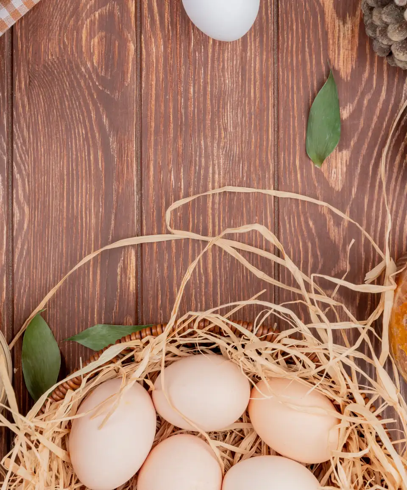
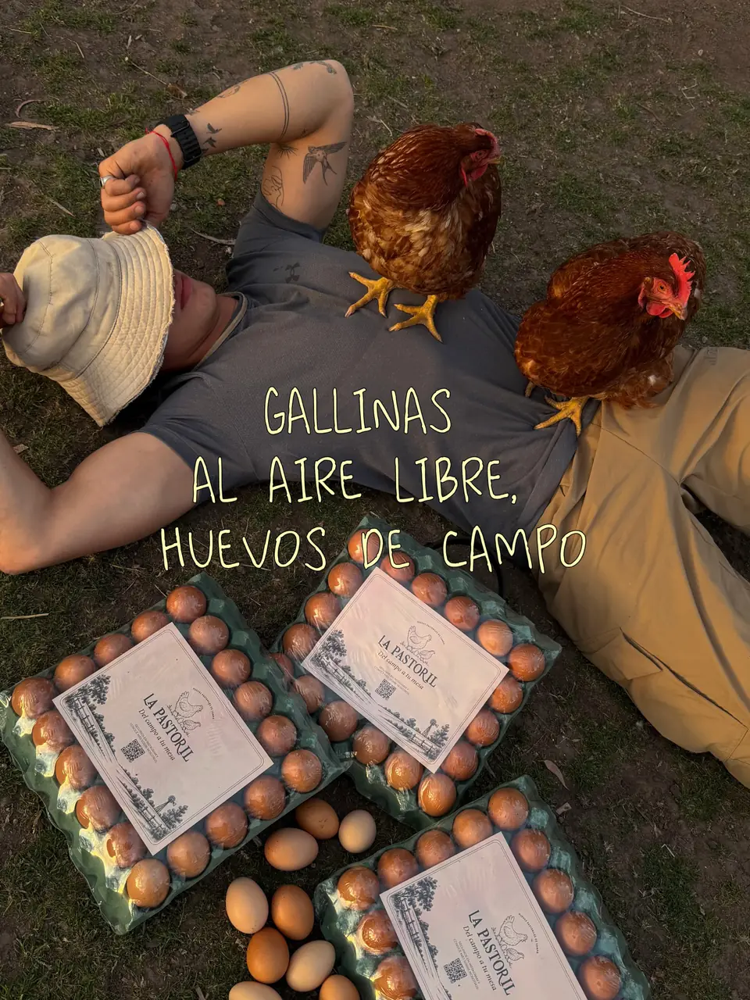

“La diferencia se nota al primer bocado: más sabor, más color y mucha más frescura. Los huevos de codorniz son un lujo.”
— Mica, Bernal
La Pastoril · Zona Sur, Buenos Aires
Huevos de campo, de verdad.
Buen día. Huevos recién puestos, del campo a tu mesa.
- Campo abierto
- Envíos a coordinar
- +6.600 nos siguen
01 — Comprar
Elegí lo que te gusta
Tocá un producto para ver el detalle. Los precios son por unidad o pack.
02 — Bienestar
Gallinas felices, huevos distintos
Así viven las gallinas de La Pastoril, todos los días.

-
Aire libre todo el día
Se mueven, descansan y comen en contacto con el sol y la tierra.
-
Alimentación natural
Ración balanceada, forraje y atención constante.
-
Sin jaulas
Espacio para correr, explorar y tomar sol tranquilas.
-
Cuidado veterinario
Controlamos salud, limpieza y bienestar de cada ave.
-
Nombre propio
Sí, tienen nombre. Cada una es parte de la historia.
Algunas de las chicas
Doña Clotilde
La jefa del gallinero. Siempre lidera la fila y vigila que todo esté bien.
Carácter
Pepita
La primera en llegar a la comida. No se le escapa ninguna señal del campo.
Apetito
Mora
Fanática de las lombrices y de dar vueltas alrededor del carrito del rastrojo.
Curiosidad
120
gallinas al aire libre
9
horas de sol por día
840
huevos juntados esta semana
03 — Nuestro campo
Un lugar donde la tierra habla
Tocá una foto para verla en grande.
Un día en la granja
-
Amanecer en el gallinero
Cuando arranca el día, las gallinas salen con calma, se estiran y empiezan a moverse.
-
Recolección a mano
Cada huevo se junta con el cuidado de quien conoce cada nido.
-
Selección y limpieza
Revisamos tamaño, limpieza y frescura antes de envasar.
-
Envasado con la etiqueta La Pastoril
Se arman los maples y packs con nuestra etiqueta, listos para salir.
-
Camino a tu mesa
De la granja a tu cocina, con la frescura que solo tiene un huevo de campo.
Codornices
Chiquitos, manchados y poderosos.
Los huevos de codorniz son más intensos y sabrosos: ideales para desayunos, ensaladas, picadas y platos con personalidad.
04 — Cuidados
Cómo disfrutar mejor cada huevo
Consejos cortos para guardarlos, probarlos y cocinarlos.
Si los vas a comer en pocos días, alcanza con un lugar fresco y seco, lejos de la humedad y del sol. En la heladera duran más: guardalos con la punta hacia abajo y, si podés, no en la puerta.
Fresco: se va al fondoViejo: flota
Tocá el vaso para hacer la prueba. Un huevo fresco es más pesado y se va al fondo; uno viejo tiene más aire adentro y flota.
Se cocinan más rápido que los de gallina: 2 a 3 minutos para que queden blandos y 4 a 5 para que queden firmes. Van muy bien en tostadas, picadas y ensaladas.
Bien guardados, los huevos de gallina aguantan varias semanas. Al ser de campo y recién puestos, la primera semana es cuando más se nota el sabor.
Revueltos con ciboulette, tostadas con queso crema y rúcula, tortilla de papa con perejil, o fritos para acompañar pan casero.
¿Cuántos huevos necesito?
4 personas
4 días por semana
Te conviene 2 docenas por semana.
Punto de cocción
Un huevo de campo se disfruta con calma.
05 — Ubicación
Zona Sur, Buenos Aires
Repartimos en la zona y también podés retirar por el campo.
Zona de entrega
- Zona Sur y alrededores
- Lunes a sábado, de 9 a 19 hs
- Retiro por el campo con cita previa
- Envíos: día a coordinar
06 — Historia
De la granja al barrio
Empezamos con unos pocos nidos y una promesa.
La Pastoril nació para llevar al barrio lo que a veces parece imposible: huevos frescos, con sabor, sin apuro y sabiendo de dónde vienen. Arrancamos con unos pocos nidos, mucho cuidado y una promesa: respeto por la tierra, por la gallina y por tu mesa.
Hoy seguimos cuidando cada detalle: alimentación, movimiento, luz, recolección y reparto. Para que cada huevo se sienta como un regalo del campo.
- Las primeras 20 gallinasUn comienzo de campo.
- Primer pedido por InstagramEl barrio empezó a conocernos.
- Llegan las codornicesMás variedad para la mesa.
- Nace la etiquetaUna identidad propia.
- +6.600 seguidoresUna comunidad que crece.
“Acá se levantan los huevos que después llegan a tu casa”
07 — Clientes
Qué dice la gente que nos conoce
1200+pedidos compartidos
4.9 / 5puntaje de la comunidad
Contadores y reseñas ilustrativos: actualizar con métricas verificadas antes de publicar.
“Pedimos para la familia y nos encantó la atención. Todo muy claro, muy amable y con buena onda.”
— Lorenzo, Quilmes“Los huevos de gallina tienen sabor a campo en serio. Nos volvimos clientes fijos.”
— Celeste, Banfield“Llegaron impecables y súper frescos. Ya estamos pensando el próximo pedido.”
Opinión ilustrativa“Qué lindo recibir un pedacito del campo en casa.”
Opinión ilustrativa“La atención fue muy amable y coordinar la entrega resultó facilísimo.”
Opinión ilustrativa“Los huevitos de codorniz son perfectos para compartir.”
Opinión ilustrativa“Todo llegó bien cuidado. Se nota el cariño en cada detalle.”
Opinión ilustrativaLas reseñas ilustrativas se reemplazarán por opiniones reales de clientes.
08 — Preguntas frecuentes
Preguntas frecuentes
Si no encontrás lo que buscás, escribinos por WhatsApp.
Elegís los productos, dejás tu nombre y tu zona, y tocás Enviar. Se abre WhatsApp con el mensaje ya escrito: lo mandás y coordinamos la entrega.
Repartimos en Zona Sur de Buenos Aires y también podés retirar por el campo con cita previa.
Sí. Si necesitás más cantidad, consultanos por WhatsApp y te armamos una propuesta.
Sí. Las gallinas se crían al aire libre, con control de salud y cuidado diario.
Lo coordinamos al confirmar tu pedido por WhatsApp.
Depende de la zona. Consultanos el mínimo y las condiciones para tu barrio por WhatsApp.
Nuestras gallinas tienen espacio al aire libre, se mueven y reciben atención todos los días. Eso se nota en el color de la yema y en el sabor.
Depende de la recolección del día. En la tienda vas a ver si un producto está disponible, si quedan pocos o si está agotado.